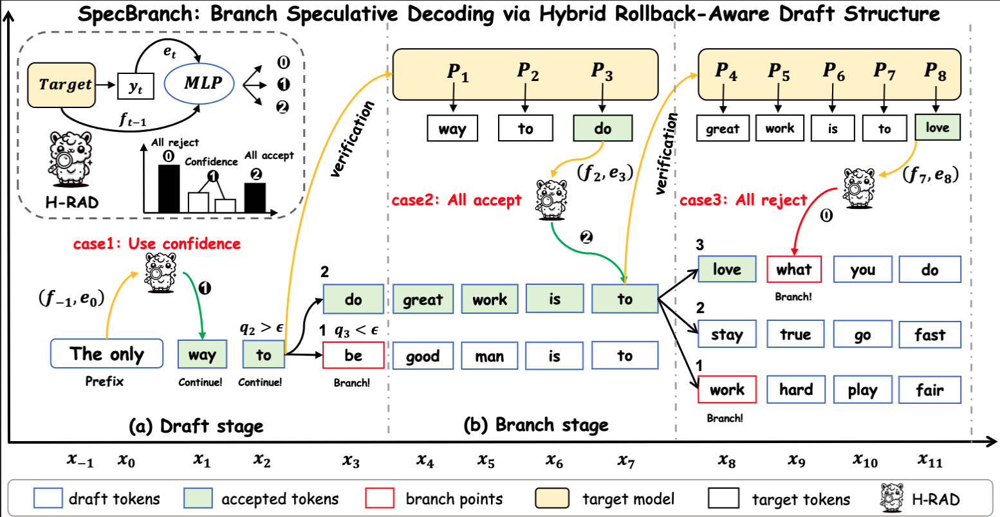

|
Junyi Shen (沈骏一) Hey, I'm Junyi, a second-year PhD student at School of Computing, National University of Singapore. I am very fortunate to be advised by Prof. Yao Lu in Scalable AI Lab. Before that, I received my B.E. degree from Zhejiang University with honors from Chu Kochen Honors College, advised by Prof. Shibo He. I enjoy anime, manga, and video games. I am also a big fan of traveling and photography. My research interests lie in Machine Learning Systems, AI Infra, and broad Artificial Intelligence. |

|
Recent News
|
Education | |
| National University of Singapore, Singapore Ph.D. in Computer Science, 2024 - Present President Graduate Fellowship (PGF) Advisor: Yao Lu GPA: 4.9/5.0 Selected Courses
|
|
| Zhejiang University, Hangzhou, China Bachelor of Engineering in Automation, 2020 - 2024 National Scholarship Advisor: Shibo He GPA: 3.98/4.00 |
|
Publications | |
 |
SpecBranch: Speculative Decoding via Hybrid Drafting and Rollback-Aware Branch Parallelism Yuhao Shen*, Junyi Shen*, Quan Kong, Tianyu Liu, Yao Lu, Cong Wang Submitted to NeurIPS 2025 arXiv A comprehensive pipeline to accelerate Speculative Decoding via a hybrid parallelism method. |
Experience | |
| Research Intern, Shanghai Qi Zhi Institute Nov. 2023 - May. 2024 Advisor: Huanchen Zhang, Yao Lu Shanghai, China | |
| Student Research Assistant, The University of Hong Kong July. 2023 - Aug. 2023 Advisor: Hengshuang Zhao Hong Kong SAR, China | |
TeachingTeaching Assistant, NUSCS6216: Advanced Topics in Machine Learning, 2025-2026 SEM1 |
Modified from jonbarron. |